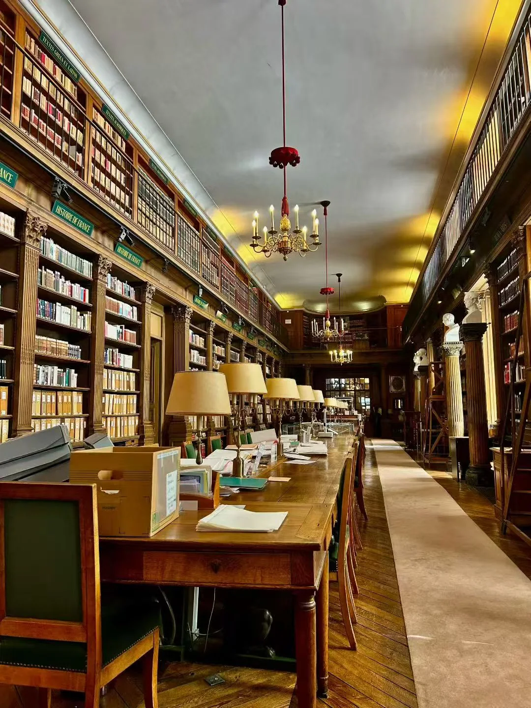
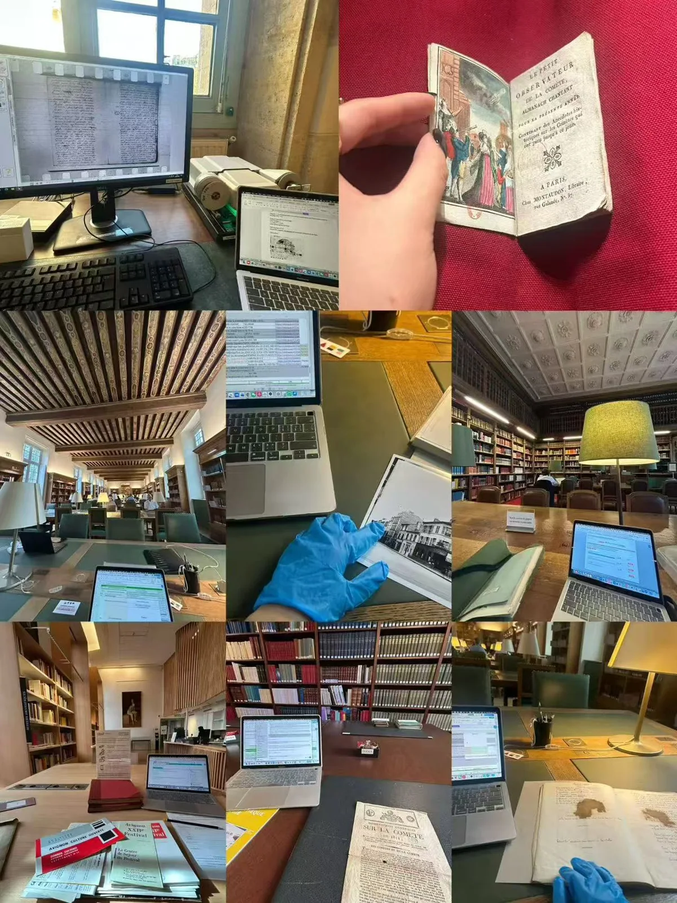
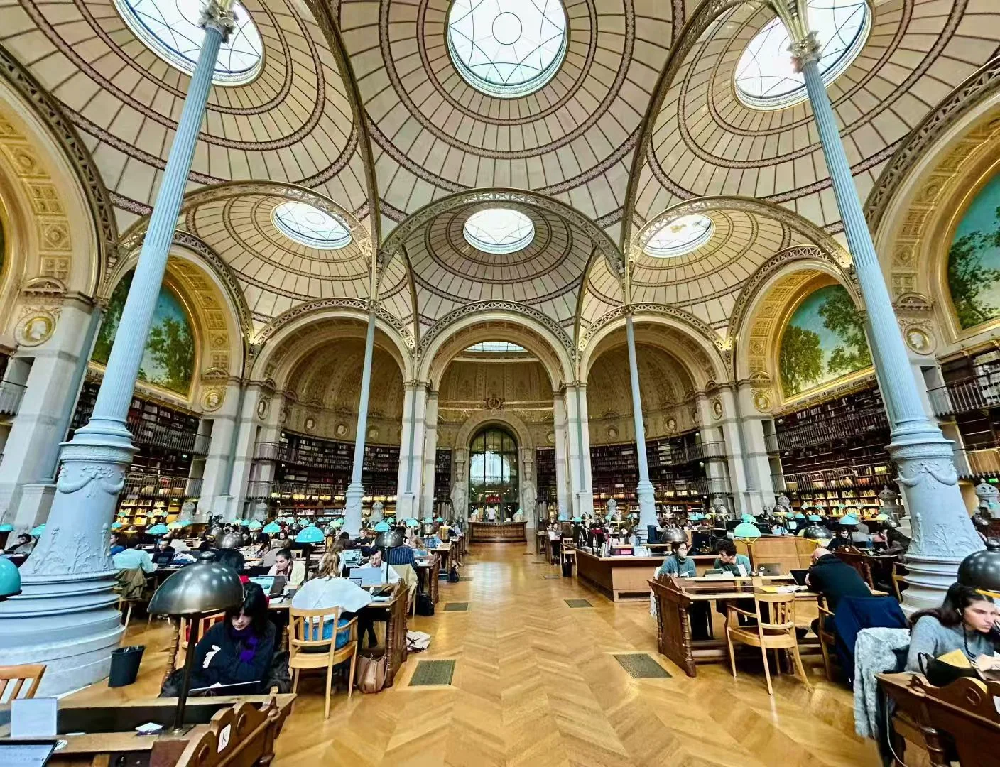
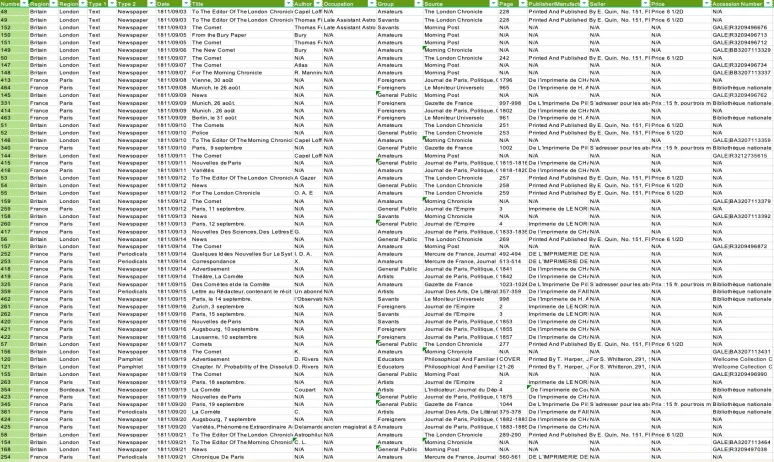
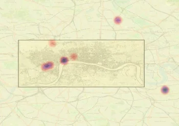

Natural events & the geographies of knowledge
A developing comparative project on how geographically dispersed observations of extraordinary natural phenomena were connected, interpreted, and authorised across Europe, c. 1750–1870.
I’m Deguang Li, a PhD researcher in History at the University of Cambridge. I study how people observed, communicated, contested, and made sense of the natural world in eighteenth- and nineteenth-century Europe.

Researching knowledge in motion—between people, places, institutions, and media.
I am a third-year PhD researcher in History at Newnham College, University of Cambridge, and a cultural historian of knowledge and science. My work explores how societies make sense of the natural world through historically situated practices of observation, communication, and representation.
My research focuses on eighteenth- and nineteenth-century Europe, particularly Britain and France, with interests in print culture, material practices, intellectual history, and transnational exchange. My training in intellectual history and comparative literature informs my approach to the relationships between knowledge, society, and politics.
I hold an MPhil in Intellectual History and a BA in Comparative Literature from Tsinghua University and studied at Sciences Po Paris as an exchange student.
Read my academic CV ↗


From a comet in 1811 to the wider geographies of knowing.
Taking the Great Comet of 1811 as a microhistorical lens, my doctoral research investigates how knowledge of the heavens was produced and transformed across observatories, newspapers, theatres, print shops, domestic spaces, and political culture in Napoleonic Europe.
Rather than treating astronomical knowledge as something simply disseminated from scientific institutions, the project follows the diverse people, media, and practices through which the comet became an object of scientific inquiry, commercial opportunity, cultural interpretation, and political imagination.
Explore the digital research →A developing comparative project on how geographically dispersed observations of extraordinary natural phenomena were connected, interpreted, and authorised across Europe, c. 1750–1870.
Exploring the 1914 solar eclipse as a window onto the entanglements of scientific exchange, state institutions, and international relations at the outbreak of war.
A separate strand of research on the Living Theatre’s Antigone and the making of revolutionary context in Avignon, 1968.
Experiments in building a source corpus, reconstructing urban spaces, and comparing the geographical imagination of the press.
My doctoral research has generated a structured corpus of more than 1,200 primary-source entries, spanning manuscript correspondence, newspapers, periodicals, printed works, and visual and material sources. Records capture provenance, dates, authorship, locations, genres, and patterns of circulation. The corpus remains a work in progress; a public textual release is planned after completion of the PhD, subject to rights and source checks.
PREVIEW ONLY · FULL DATASET NOT YET PUBLIC
These maps locate the urban sites where cometary knowledge was observed, recorded, printed, sold, performed, and debated. The points refer to historically documented activities—not simply places where the comet was sighted. Select a city to explore illustrative microhistories.

Markers are approximate visual annotations based on the original presentation, not newly georeferenced coordinates.
Newspaper correspondents Theatres Print sellers / instrument makers Places cited
Colour categories are summarised; consult the underlying research for full classifications.By comparing place references within individual newspapers and periodicals, these heatmaps explore how editorial selection shaped the imagined geography of cometary knowledge. They visualise the frequency of place mentions, not the density of historical activity. Interpret comparisons with care: publication size and source coverage may differ.

Selected publications, works in progress, and academic activities.
“From Gentleman’s Observatory to Women’s College: The Transnational Life of the Newnham Telescope.” Bulletin of the Scientific Instrument Society. Accepted, forthcoming.
“The Making of Superstition: Metropolitan Serial Print and the Ordering of Cometary Knowledge in London, 1811.” Submitted to The British Journal for the History of Science.
“A Comet Cannot Become a Sun: Celestial Knowledge and Political Culture in Napoleonic France.” Submitted to French History.
“Retail China: Chineseness, Commodity Knowledge, and the British Trade Card, 1750–1830.” Submitted to Journal for Eighteenth-Century Studies.
“Répétition: Antigone and the Making of Revolutionary Context in Avignon, 1968.” In Context (Peter Lang, projected 2027).
Dominick LaCapra, History and Criticism (1985). Chinese translation by Deguang Li, Commercial Press (under contract; projected 2027).